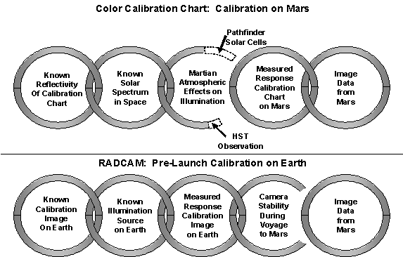

Solving the
color calibration problem of Martian lander images
Ron L. Levin*a,
Gilbert V. Levinb
a46 Washington Avenue, Burlington, MA USA 01803
bSpherix Incorporated, 12051 Indian Creek Court,
Beltsville, MD USA 20705
ABSTRACT
The
color of published Viking and Pathfinder images varies greatly in hue,
saturation and chromaticity. True color is important for interpretation of
physical, chemical, geological and, possibly, biological information about
Mars.
The
weak link in the imaging process for both missions was the reliance on imaging
color charts reflecting Martian ambient light. While the reflectivity of the
charts is well known, the spectrum of their illumination on Mars is not. “Calibrated” images are usually reddish,
attributed to atmospheric dust, but hues range widely because of the great
uncertainty in the illumination spectrum. Solar black body radiation, the same
on Mars as on Earth, is minimally modified by the atmosphere of either planet.
For red dust to change the spectrum significantly, reflected light must exceed
the transmitted light. Were this the case, shadows would be virtually
eliminated. Viking images show prominent shadows. Also, Pathfinder’s solar
cells, activated by blue light, would have failed under the predominately red
spectrum generally attributed to Mars.
Accordingly,
no consensus has emerged on the colors of the soil, rocks and sky of Mars. This
paper proposes two techniques to eliminate color uncertainty from future
images, and also to allow recalibration of past images: 1. Calibration of
cameras at night through minimal atmospheric paths using light sources brought
from Earth, which, used during the day, would permit calculation of red, green
and blue intensities independent of scene illumination; 2. Use of hyperspectral
imaging to measure the complete spectrum of each pixel.
This
paper includes a calibration of a NASA Viking lander image based on its color
chart as it appears on Earth. The more
realistic Martian colors become far more interesting, showing blue skies, brownish
soil and rocks, both with yellow, olive, and greenish areas.
Keywords: Mars color, Mars lander imaging, color image calibration, Raleigh scattering, Mars atmospheric dust, Mars environment
1. INTRODUCTION AND BACKGROUND
Three
spacecrafts have successfully landed on the surface of Mars. There were two Viking landers in 1976 and
the Pathfinder lander in 1997. These
landers retrieved a great deal of valuable information about the Martian
surface, including a large number of color images. In the 27 years since the Viking spacecraft landed and the 5
years since Pathfinder landed, there has been no consensus on the calibration
of these color images. The coloration
of the Martian sky and landscape has been the subject of numerous scientific
papers.
The first color image
(12A006/001) of the surface of Mars was taken July 21, 1976, at the Viking 1
site, one day after the landing.
Immediately displayed on color monitors at JPL, as seen in Figure 1a,
the landscape awed observers with its resemblance to that of Arizona. Typical desert colorations of soil and rock,
ranging from umber sand to yellowish-brown and olivine-colored rocks stood out
clearly under a blue sky. Two hours later, however, the official image was
changed to the monotone of orange-red (NASA P-17164), Figure 1b, that, with few
exceptions, has prevailed in NASA-published images of Mars ever since, as
presented by Mutch et al.[1]. However, a spectral analysis of color images
of the Viking 1 site reported[2]
a broader palate. The paper made the
first, and perhaps only, reported use of JPL’s Image Processing Laboratory to
analyze digitally the red, green and blue color channels of the images taken by
the Viking 1 lander camera. In addition
to studying the color images, their RGB components were transformed into
saturation, hue and intensity components to enhance subtle deviations. When these components were equally amplified
to produce an equal average sensitivity over the spectral bandpass, the
resulting “radiometric” (closest possible approach in appearance to a human
observer) images very closely resembled the first color image
(12A006/001). Among the range of
colors, the paper reported that some of the rocks exhibited greenish patterns
that apparently changed between images taken 301 sols apart. Radiometric images of lichen-bearing
terrestrial rocks taken and processed through the same system as were the
Viking images showed a close resemblance of the lichen colonies to the greenish
patches on the Mars rocks. Inclusion in
the analysis of three near-IR channels available on the Martian images enhanced
the greenness of the patches that were, to the sensitivity of the method,
virtually indistinguishable from the lichen colonies on the terrestrial rocks.
Although the authors of that
paper drew no conclusion about the biological implication of their findings,
the mere comparison of the Mars images with lichen produced a major controversy
with the orange-red Mars majority. The
paper was heavily criticized by NASA officials who, upon viewing the images,
contended they saw no evidence of the features claimed[3]. Even when the greenish colored areas were
confirmed in subsequent reports[4],[5],
those authors took special care to avoid any possible biological implication.
Levin et al.[6] had pointed
out that the different sun angles under which the images were obtained might
account for some of the apparent differences between the two. After publication of the paper, its authors
requested NASA to obtain images of the same area at each Martian-year
anniversary, when the same sun angle would prevail. This was done, although power limitations forced a narrowing of
the field taken. However, before Viking
1 died, four such images, “repros,” were obtained, spanning some 3 Martian
years. The images are published here,
as Figure 2, for the first time.
Comparisons among them show apparent changes in features over time, not
only in the near field, where differences on the rocks were first detected,
but, perhaps, even more surprisingly, in the distant field.
Mars[7], intended to be, and generally accepted as the
definitive compendium on Mars, in all of its 1,455 pages plus 18 color plates,
makes no mention or reference to this issue.
However a telling statement on this important matter is made on the
cover of the book. The cover features a
mosaic constructed, as explained in “About the cover,” from color images taken
by the Viking 2 lander. The resulting
panoramic image presents a surprising, nearly universally bland yellowish-ochre
landscape and matching sky. However,
resisting this strenuous color-suppressing treatment, greenish patches cannot
be prevented from peaking through on many of the rocks. This paper picks up the issue and proposes
two methods to obtain accurate color images of the surface and sky of Mars in
future missions, and demonstrates a method for more accurate recalibration of
existing images.
Figure 3 shows a grouping of
four Viking lander images and four Pathfinder images from official NASA
websites[8]. As seen, the colors of the soil and sky vary
greatly among the images. The first
Viking image has a sky that shows blue, the second image has an orange sky, the
third a pink sky, and the fourth a very red sky. The
colorations of the ground vary similarly.
The sky in the Pathfinder images varies between white in the first
image, gray in the second image, brownish orange in the third, and orange in
the fourth image.
The
first Pathfinder image shows reddish soil with some blue/green patches. The second image shows the Sojourner rover
with its solar cells appearing grayish rather than its actual blue color. The solar cells on the lander also appear
devoid of blue in the third image. The
Viking lander camera used a scanning mirror, a photodiode, and three colored
filters to generate red, green, and blue images, which were then merged to form
the color image. The Pathfinder lander
had a charge-coupled device, which took data simultaneously in red, green, and
blue. Both landers had onboard color
calibration charts, which were illuminated by the ambient light on Mars.
2. EXISTING CALIBRATION METHODS
Viking
and Pathfinder had two methods of calibration.
The first calibration scheme involved the use of the color charts that
were visible in some of the Martian images.
The second method was called RADCAM, and it was based on calibration of
the flight camera on Earth. These
cameras took images under controlled lighting conditions and modified them
until they matched the scene itself.
The calibration algorithm was kept in computer data files, which were,
and still are, available to calibrate raw Martian images.
A
description of these calibration procedures is shown in Figure 4. As shown in the figure, both of these chains
of calibration are broken at one point.
The color calibration chart method has a gaping hole on the middle link
where the atmospheric effects on the illumination of the color chart are very
much in doubt, and are the subject of a great deal of research. The RADCAM chain fails because the stability
of these solid state devices during the trip to Mars is not known; therefore,
the performance of the camera on the Martian surface is not necessarily the
same as it was on Earth.
Figure 4. Chains of Calibration

The
color chart calibration chain (Figure 4) shows that the reflectivity of the
color calibration chart is very well known.
Were this chart in space, it would be illuminated with a spectrum from
the Sun that is very well known.
Unfortunately, by the time this solar illumination passes through the
Martian atmosphere, it is modified in ways that are not currently
understood. Many scientific studies
postulate a large amount of red dust in the atmosphere, modifying both the
direct and scattered light from the Sun.
This broken link renders the rest of the calibration data difficult to
use.
On
the surface of Mars, excellent raw data were taken from the color calibration
chart and from the surface itself.
Unfortunately, it is not known what the color chart should look like in
the illumination from the Sun as it reaches the Martian surface. If the appearance of the color chart on Mars
were known, then the chain would be complete and we would be able to calibrate
the other pixels in the Martian image from the surface based on the calibration
of the color chart. The unknown appearance
of this color chart on the surface of Mars prevents a definitive coloration of
the Martian environment. This is
principally responsible for the proliferation of different color calibrations
and different colorations of the surface of Mars as seen in Figure 3.
The
RADCAM calibration chain (Figure 4) appears to have been dismissed by image
analysts. This may be because of the
uncertainty in the stability of the camera and its solid state components
during the voyage to Mars. However,
this seems to be a very reasonable calibration chain. In applying it, a calibration source on Earth is illuminated with
a light source whose spectrum is measured.
A comparison of the calibrated output with the calibrated target under
the available calibrated illumination source provides a mathematical formula by
which raw data from the camera can be converted
into
the desired image. This calibration, of
course, can be tested while the camera is on Earth by re-imaging the calibrated
target or any other known image. This
was done in the case of Viking and Pathfinder.
These calibration algorithms have been stored and remain available
today.
The
critical question is the usability of these calibration algorithms on these
cameras after they have made their voyage to Mars. If the camera were stable, all questions of atmospheric effects
and illumination would be eliminated since the algorithms have been tested on
Earth to convert raw data into calibrated images. The calibrated images produced would then be correct, regardless
of the coloration of Martian objects or the illumination. The absence of such images in publications
indicates that image analysts doubt that the camera’s response measured before
launch was still accurate after these cameras reached the Martian surface.
3.
INFORMATION FROM PATHFINDER SOLAR CELL
In
Figure 4, the color calibration chart chain, broken by the unknown atmospheric
effect on illumination, is shown as partly rebuilt based on evidence from
Pathfinder solar cells and observations from the Hubble Space Telescope. These dotted links represent lines of
research that might some day reconnect the color calibration chain and solve
these coloration issues. A great deal
of research on solar cells for space applications has been performed at NASA’s John
Glenn Research Center in Cleveland[9]. One of the differences between the Viking
and the Pathfinder missions concerns the power source for each lander. The Viking lander was powered by a radio
thermal generator (RTG), which extracts electrical power from radioactive
plutonium. However, partly because of
safety concerns, the Pathfinder lander was designed to be powered by solar
cells converting light from the Sun and sky into electrical power. The power production of these solar cells
was relayed to Earth by telemetry as part of monitoring the health of
Pathfinder. This telemetry showed that
the Pathfinder solar cells produced the amount of power for which they had been
designed[10].
It
is well know that the efficiency of solar cells critically depends on the
spectrum of the light with which they are illuminated. Solar cells are solid state devices. Photons entering the solid state material
collide with electrons in the conduction band and promote them to the valance
band in which they become mobile and move toward the collectors. The efficiency of this process depends on
the likelihood that an electron will absorb enough energy from a photon to be
promoted across the band gap to the valance band. This probability is zero if the photon energy is less than the
band gap energy. This probability of
electron promotion increases rapidly with increasing photon energy. Red photons have a very low efficiency in
photovoltaic cells. The overall
efficiency of the photo cell is dependent on the fraction of the incident green
and blue light.
The
inefficiency of red photons in photovoltaic cells is mirrored by the
inefficiency of red photons in exposing ordinary black and white film. For this reason, all darkrooms are
illuminated by red lights to prevent fogging of film. Color calibration charts in the Viking and Pathfinder lander
images are heavily red with little, if any, green and blue components. Were the colors reported by these images
correct, the illumination would result in inadequate power production by the
solar cells for their assigned tasks.
This constraint is illustrated in Figure 5.
The
illumination postulated for the color chart cannot be so tilted toward the red
that it would be unable to produce the power that was observed in the
Pathfinder lander. Figure 6a shows a
model for atmospheric transmission as seen from the surface of Mars[11]. This hypothesized model shows an
atmospherics transmission of only 70% at a wavelength of 4,000 angstroms, which
is the blue end of the visible spectrum.
In the model, at 5,000 angstroms, which is green, the transmission is
only 75%. This means that a quarter or
more of the blue and green photons are hypothesized to be unavailable to the
Pathfinder solar cells, which should have a marked effect on their power production
as compared with the same solar cells in space. This transmission model is based on single scattering of light by
red dust particles in the Martian atmosphere.
In reality, however, dust storms were observed only two times during
Viking lander 1’s three Martian years of observation[12]. During the 2245 sols observed, less than 10%
exceeded normal[13] atmospheric
opacity.
The
effect of this hypothesized red dust is to absorb blue and green and to scatter
the red resulting in the predominance of red as is often shown in published
lander images. This means that, while
the transmitted red is being reduced by scattering in the sky, the blue and
green are being reduced even more strongly by absorption. The illumination of the
Figure 6. Atmospheric Scattering
color
chart is then hypothesized to be red, both from the direct sunlight, as shown
in the figure and by scattered sunlight in the rest of the sky. This greatly contrasts with the situation on
Earth, as with any atmosphere of uncolored gases, in which the color of the sky
is dominated by Rayleigh scattering[14]
and must be blue.
Atmospheric
molecules, much smaller than a wavelength of light, fall into the Rayleigh
scattering regime shown in Figure 6b.
Carbon dioxide molecules, like oxygen and nitrogen molecules, are much
smaller than a wavelength of light.
Even though the density of the Martian atmosphere is only 1% that of
Earth, this is somewhat compensated by the fact that the atmosphere on Mars
extends to much higher altitudes due to the lower gravitation of Mars. The physics of Rayleigh scattering shows
that the intensity of the scattering is proportional to (1/λ)4. This
causes the scattering to be dominated by short wavelengths, which are blue, and
thus causes the sky, as seen from the surface of a planet, to appear blue. This sky coloring should exist on Mars
barring significant interference by dust particles.
Even
though the theoretical models for scattering and transmission of light are
hypothesized in many of the published images to be very dissimilar on Earth and
Mars, the results for direct sunlight are amazingly similar. Figure 7 shows a comparison between the
spectrum of sunlight as measured in space and on Earth, and the spectrum of
sunlight theoretically predicted to occur on the surface of Mars. The top curve with the diamond markers is
the spectrum of sunlight measured in space[15]. The lower curve with the solid circles is
the spectrum of direct sunlight measured on Earth when the Sun is directly
overhead[16],[17]. The curve with the square markers is the product of the solar
spectrum in space with the Martian dust single scattering model shown in Figure
6a. This transmission model was
calculated for the Sun being directly overhead.
The
Rayleigh scattering of the blue light on Earth is shown in the figure to be
similar in magnitude to the hypothesized absorption of blue by red dust in the
atmosphere on Mars. Over the visible
wavelengths, 4,000 to 7,000 angstroms, the experimentally measured spectrum on
Earth and the theoretically hypothesized spectrum on Mars match to within about
5%. This should mean that the color
calibration charts received direct sunlight on Mars quite similar to that
experienced on Earth. In most pictures
of the Martian surface (except during rare dust storms), the direct light seems
to be much
Figure 7. Direct Solar Illumination on Earth and Mars
(Sun Directly Overhead)
stronger
than the scattered light from the sky, as can be seen from the darkness of the
shadows of the rocks and of the lander spacecraft. Sand in the shadows of these rocks appears much darker than the
sand immediately adjacent to it, indicating that scattered light from the sky
is not very strong.
The
Martian dust single scattering model does not appear adequate to explain the
high red-to-blue ratio of the calibration charts in most published images. However, the similarity of these transmitted
spectra could explain why the solar cells have performed so well, but their
performance is incompatible with the redness of the “calibrated” Martian
images.
4. INFORMATION FROM THE HUBBLE SPACE TELESCOPE
There
exists one other important piece of data concerning the scattered light in the
Martian sky. Every 2 years, at Mars and
Earth conjunction, images of the planet are taken by the Hubble Space Telescope
as shown in Figure 8. The resolution of
the Hubble Space Telescope in sufficient to allow imaging of the planet’s limb
as seen in Figure 8. The Hubble Space
Telescope has onboard spectrometers which are used to study the Doppler red
shift of distant stars. These
spectrometers can be used to calibrate the light reaching the imaging camera on
the HST. The spectrometers are capable
of looking at the same stars as the imaging camera and therefore provide an
excellent calibration. A study of these
images was made by Philip James[18],
who found that scattering of the Martian atmosphere as seen from Earth is
predominantly blue. This adds another
constraint on the broken calibration link in Figure 4. If the results of the Hubble Space Telescope
are correct, the Martian sky cannot be as red as shown in many published
images, and the illumination from the sky cannot be contributing to the red
dominance of the color calibration charts.
Both
the Hubble images and the performance of the Pathfinder solar cells argue for a
much greener and bluer environment than is currently shown in lander
images. However, neither of these measurements
is sufficiently definitive to repair this broken link and allow the production
of a reliable calibration. This
uncertainty cannot be resolved until a Martian lander measures the spectrum of
solar illumination. The most important
question with respect to the color of Mars might be: What does an image of the Martian surface look like if it were
illuminated by the same light that we are familiar with on Earth?
A
rock formation seen in Earth daylight may not look familiar to us in a very red
illuminating light. In order for
geologists to recognize the minerals that they are familiar with on Earth, it
might be more appropriate to perform a color calibration that renders the
geological formations as if they had been in the same illumination that geologists
are accustomed to seeing on Earth. In
this case, the color calibration chart should be set to appear similar to its
appearance in a sunlit area of Earth.
This may not produce geological images as they would appear to an
astronaut on Mars, but it will render those geological formations in the same
coloration that geologists on Earth are accustomed to observing, permitting
direct comparison of the samples. To
this end, a simple illustration is performed on Figure 9 on a published image
of the Martian surface from Viking.
5.
SIMPLE EARTHLIKE CALIBRATION
The center nine panel square
in Figure 9 depicts the color chart aboard the Viking 1 lander. Two of these charts were aboard the lander,
as seen in Figure 9. The right side of
the figure shows the NASA-published image of the Viking 1 lander scene. The authors attempted to make a linear
conversion to simultaneously transform the red, green, blue, black and white
panels into their Earth-measured counterparts.
However, an inconsistency in the color chart as presented in the NASA
image made this impossible. Analysis
showed that the “blue” panel actually contains almost equal parts of blue and
red, while the white and gray panels are neutral. It is difficult to understand the large presence of red in the
blue panel under any but the most extreme red illumination. Unknown illumination provides only three
free parameters in the RGB space, the relative scaling of the three colors. Comparison of two color charts provides 15
constraints (three each from the red, green, blue, black and white
panels). A change in illumination
should require only three free parameters (the illumination intensities) to
transform the image to satisfy the 15 constraints. The calibration scheme used here can compensate for any change in
illumination, and for other changes.
However, application of the method to the NASA image was found to be
impossible. This means that the
official image must have been produced from the raw data by a non-linear
(potentially non-physical) calibration method that cannot be corrected by
linear transformation, indicating a degree of subjectivity in the method
employed by NASA.
Although the non-linearity of
the NASA image makes it impossible to transform it accurately, the method was
applied, thinking it might provide the closest possible approach to a correct
re-calibration of the NASA image. In
July 2003, the authors photographed the color chart on the Viking lander on
display at the Smithsonian Institution Air and Space Museum, in Washington,
D.C. Since fabrication, the Viking
lander has rarely been exposed to the outdoor sunlight or any other ultraviolet
source that might accelerate any color change.
A Nikon Digital Coolpix 885 camera was used, with the flash set for auto
white balance. A strip of the color
chart in the digital image is shown as the first color bar on the extreme left
of Figure 9. This Earth-like color bar
was transformed into the numerator matrix shown in the center of the figure.
The same operation was
performed on the identical color chart of the NASA-published lander image shown
on the right side of the figure, yielding the RGB color bar on the right side
of the figure. This Martian color bar
was transformed into the denominator matrix shown in the center of the figure. The ratio of these matrices (Earth / Mars)
produces a transfer matrix. The
transfer matrix transforms the colors of the Martian color chart into those of
the Earth color chart. The results of this transformation are seen in the color
bar second from the left of the figure.
The comparison of the color bar derived from the Earth digital
photograph to that from the Mars NASA-recalibrated color bar shows a close
match, demonstrating that the transformation did approach the Earth scene.
All the pixels of the
NASA-published original image on the right side of Figure 9 were similarly
transformed into the image with Earth-like illumination as seen on the
left. The sky now appears blue, where
it has been a dark pink before. The
U.S. flag becomes more familiar. The
soil appears browner and the rocks in the scene show more contrast to the soil,
more nearly resembling Figure 1a, the color image as first reported from Viking
1. The controversial olive-green areas
reported by Levin et al. [19]
re-appear.
The calibration provided by
this scheme may, in fact, be more nearly correct than the ones used to create
the published images. There is
currently insufficient information to make a judgment. Nevertheless, it can be argued that this
calibration procedure produces an image close to what the Martian surface would
look like under an illumination similar to that on Earth. Images calibrated in this way might be more
useful products for geologists and scientists than are the images as currently
published. Calibrating the color charts
as if they were shown in Earth sunlight produces a picture that shows the soil
and rock formations on Mars in a light that is more familiar to scientists on
Earth. One goal might be to identify possible
Martian igneous and metamorphic rock by comparing the images of these rocks to
their Earth counterparts when similarly illuminated.
6. ROBUST CALIBRATION METHODS
The true color of Mars could
become known on future missions if the lander cameras were calibrated on Mars
using light sources brought from the Earth.
Figure 10 illustrates three ways to do this. In this figure, a Martian camera is viewing a color calibration
chart at night under illumination by the black body spectrum from an
incandescent light bulb brought from Earth.
Since this chart is very close to the camera, and the light bulb is
close to the chart, the effects of the atmosphere are negligible. (If there were any concern about the atmosphere,
the light bulb, color chart, and camera could all be connected by clear plastic
of known properties rather than to allow any of the light to transit the
Martian atmosphere.) The second panel
in the figure shows a method in which the Martian lander camera observes red,
green, and blue LED’s that have been calibrated on Earth.
The
third panel depicts a calibration procedure based on a tunable dye laser also
brought from Earth. If these
calibrations were performed at night, they would be based purely on light of
known spectral content. It would be
reasonable to expect that the calibration algorithm derived at night would
still be valid during the next Martian day.
If the stability of this calibration were a concern, the camera could be
designed to face inward toward the spacecraft during the daytime to look at a
dark enclosed area with calibrated light sources of known spectral
properties. At the desired time, the
camera could immediately be turned around, look at the ambient scene, and take
images using the same
calibration
parameters. Once the lander cameras are
calibrated using light with known spectral properties, the rendition of these
images on Earth would no longer be open to question. These calibration procedures could eliminate the broken link in
the chain shown in Figure 4.
7. HYPER-SPECTRAL IMAGING
The
coloration of Martian lander images has been so uncertain for such a length of
time that it is perhaps desirable to use a higher level of technology to ensure
that the issue is resolved. In the time
since the Viking lander, a new technology has been developed called
hyper-spectral imaging which is able to provide a complete spectrum on every
pixel in a lander image. Hyper-spectral
technology provides the equivalent of running each image pixel through a
spectrometer. This concept is
illustrated on the upper left panel of Figure11, in which a complete color
spectrum is shown behind each pixel, turning the 2 dimensional image into a 3
dimensional cube of data.
A
hyper-spectral imager provides a spectrum measured in hundreds of wavelengths
as compared to the broad red, green, and blue wavelengths captured in a
traditional color image. This more
detailed spectrum of each pixel is more easily calibrated and provides
scientific information beyond that available in color imaging. The upper right portion of Figure 11 shows
the results of a multi-spectral imager that was onboard the Pathfinder lander[20]. These graphs show the spectra for several
different pixels of an image of a rock named Barnacle Bill. The spectrum recorded by Pathfinder covers
the wavelengths from 4,400 angstroms to 10,000 angstroms, all of the visible
spectrum except the extreme blue end, and continues well into the infrared
spectrum. Since infrared light begins
around 7,000 angstroms, only half of the data taken by the Pathfinder imager is
in the visible.
The
multi-spectral imager on Pathfinder measured the spectra in only 11
wavelengths. Thus, there are only about
5 spectral measurements of visible light.
This certainly represents an improvement over red, green, and blue color
imaging which, together with the infrared wavelengths, provides a spectrum
scientifically valuable for geologists.
This portion of the figure shows the spectral differences among areas
around Barnacle Bill, portions of Barnacle Bill that are thought to be oxidized
volcanic cinders, portions of the solid rock face, background soil, and
unoxidized volcanic rock.
Today’s
hyper-spectral imaging technology is greatly improved over the multi-spectral
imaging of Pathfinder. In many
hyper-spectral instruments, the visible region of the spectrum is divided into
more than a hundred spectral bands[21]. With hyper-spectral imaging, it is possible
to imagine recording scientific data that could answer many fundamental
questions about Mars. One very
important and obvious result would be the analysis of pixels that are part of
an image of the Sun received on Mars.
At the bottom left of Figure 11 is a cartoon of a spectrum of the Sun
obtained by a hyper-spectral imager.
The blue points represent data received, while the red curve represents
a theoretical model, such as a 6800° K black body spectrum. The spectrum of direct sunlight incident to
Mars could be accurately measured by this instrument and would solve, once and
for all, the question of direct illumination, and would greatly help to define
the appropriate scattering model for the Martian atmosphere.
The
hyper-spectral imager could also produce the spectra from pixels in the sky at
differing angles from the Sun. These
spectra of scattered light could be compared directly against the theoretical
model of Rayleigh scattering, which predominates on Earth, and to the dust
single scattering model[22]. At the bottom center of Figure 11 is a cartoon of a hypothetical spectrum from
a pixel in the sky that could be received from a hyper-spectral imager. The blue points represent received data,
while the red curve represents one of these theoretical models. The observation of this sky spectrum from
many different pixels in the sky could be used to define the interaction
between sunlight and the Martian atmosphere, adding a great deal of information
about the Martian atmosphere.
Finally,
the cartoon at the bottom right of Figure 11 shows how spectra could be
generated by pixels from different rocks in the lander’s environment. Coordinated with the Sun and sky spectra,
these detailed spectra would have a great deal of geological value. Since the illumination from the Sun and sky
would be known, the hyper-spectral imager could measure the absolute reflectivity
of geological formations in the scene.
Hyper-spectral
imaging could also go a long way toward improving the reproduction of colors in
the Martian scene. Once the
hyper-spectral data were received on Earth, a device could be constructed to
recreate exactly the observed spectra in an image. Therefore, rather than looking at an image in which the broad
red, green, and blue bands have been approximately reconstructed, humans could
look at a scene in which the exact spectrum of each pixel was faithfully
reproduced on Earth. Humans would then
be able to estimate the coloration of the scene by allowing their eyes to view
the exact visible spectrum that was recorded on Mars. The most important possible find could be spectra that might be
of biological significance, perhaps an indication of photosynthetic
microorganisms.
An
example of the advanced state of hyper-spatial imaging is the Hyperion
hyper-spectral imager, which is currently operating on the Earth-observing
spacecraft EO-1, orbiting the Earth at an altitude of 700 kilometers[23]. The Hyperion imager weighs 49 kilograms and
uses an average of 51 watts of power.
This spectrometer has 220 bands of which 30 are in the visible. It has been calibrated to an absolute radiometric
accuracy of 6%. A sizeable fraction of
the 49 kilograms is needed for a telescope which achieves 30 meters resolution
on the Earth’s surface from a distance of 705 kilometers. This telescope would be unnecessary on a
lander mission. A hyper-spectral imager
could settle the calibration issues, which have plagued Martian lander images
for 27 years.
8. SUMMARY
No
consensus has evolved concerning the color calibration of Martian lander
images. There is a wide variation in
the calibration of published images seen in newspapers, scientific articles,
and on the Internet. Important basic
questions have remained unresolved. The
color and scattering physics of the sky is still at issue. There is a wide range of uncertainty about
the coloration of light illuminating the Martian surface. There is wide uncertainty about the coloration
of the soil and rocks. Because of these
unknowns, there is a great uncertainty about the reflectivity of objects on the
ground and how those geological objects would appear if they were illuminated
by a known light source.
In
an effort to resolve these issues, two broad categories of solutions are
recommended. The first is the
calibration of color cameras completely based on light sources that are brought
from Earth, making no use of ambient light on Mars. These calibrations could occur either at night or during the day
in a dark enclosure. This procedure
would seal the break in the chain of calibration caused by the unknown
illumination at the Martian surface.
Once this calibration was achieved, it could then be used on raw data
taken from the surrounding environment.
Calibrated images produced by this technique would show the actual
coloration of the Martian surface in the true Martian ambient lighting.
A
more technically advanced and more expensive method of determining the absolute
coloration of the Martian surface would be to use a hyper-spectral imager
instead of a conventional red, green, and blue color camera. A hyper-spectral imager provides the
complete spectrum of each pixel leaving no question as to that pixel’s color
content. These measured spectra could
then be faithfully reproduced on Earth.
This would allow the viewer to see a precisely recreated spectrum from
each pixel in an image.
Using
these advanced technologies should close the broken links in the chain of
calibration. Images could then be
produced that would be of greater value to geologists, chemists, and biologists
studying Mars. These calibrations could
also be used to understand the reflectivity of the Martian scene and to produce
another set of images that show how the
scene
would look if illuminated by light on Earth.
The full potential of Martian lander imaging could then be
realized. In the meantime, the existing
images of the Martian surface may be recalibrated to Earth conditions, as shown
in Figure 9, to provide what is very likely a closer approach to reality than
presently available.
ACKNOWLEDGMENTS
The authors are indebted to Dr. John Kay, MIT Lincoln Laboratory, for innovative suggestions and a critical review of this paper. We gratefully acknowledge the superb word processing and library skills of Ms. Katherine Brailer, Executive Assistant, Spherix Incorporated, Beltsville, Maryland.
REFERENCES
Figure 1. Viking 1 Lander: First Color Photo 12A006
Figure 2. “Repros” of Viking Lander 1 Images Spanning
3 Martian Years
(Note: Hole in foreground of last 3 images resulted
from a sample taken after Sol 34)
Figure 3. Lander Imagery from Current NASA Web Sites
Figure
10. Methods for Nighttime Calibration
at Night Using Known Light Sources
Figure 9. Calibration Scheme
Figure
11. Hyper-Spectral Imaging
*Currently working at MIT Lincoln Lab: e-mail ronlevin@comcast.net; phone781-272-1497; fax 781-272-1497.
[1]. Mutch, T.S., A.B. Binder, F.O. Huck, E.C. Leventhal, S. Liebes, Jr., E.C. Morris, W.R. Patterson, J.B. Pollack, C. Sagan, and G.R. Taylor, Science, 193, 791, 1976.
[2]. Levin, G.V., P.A. Straat, and W.D. Benton, “Color and Feature Changes at Mars Viking Lander Site,” J. Theor. Biol., 75, 381-390, 1978.
[3]. Levin, G., personal observation, as reprinted in B.E. DiGregorio, Mars: The Living Planet, Frog Ltd. c/o North Atlantic Books, Berkeley, CA, p. 194, 1997.
[4]. Strickland, E., “Color Enhanced Viking Lander Images of Mars,” abstract, Second International Colloquium on Mars, NASA Pub. 2072, 1979.
[5]. Strickland, E., “Soil Stratigraphy and Rock Coatings Observed in Color Enhanced Viking Lander Images,” Lunar and Plan. Sci., 10, 3, 1192-1194, 1979.
[6]. Op Cit 2.
[7]. Kieffer, H.H., B.M. Jakosky, C.W. Snyder, and M.S. Matthews, Eds., Mars, U. Ariz. Press, Tucson and London, 1992.
[8]. “NSSDC Image Collection, Mars,” http://nssdc.gsfc.nasa.gov/imgcat/html/group_page/MR.html and “Mars Pathfinder Images,” http://nssdc.gsfc.nasa.gov/planetary/marspath_images.html.
[9]. G.A. Landis, “Solar Cell Selection for Mars,” Proceedings of the 2nd World Conference on Photovoltaic Energy Conversion III, 3986, 1998.
[10]. Appelbaum, J., T. Segalov, P. Jenkins, G.A. Landis, and C. Baraona, “Verification of the Mars Solar Radiation Model Based on Mars Pathfinder Data,” Proceedings of the 26th IEEE Photovoltaic Specialists Conference, 103, 1997.
[11]. Ockert-Bell III, M., J. Pollack, C. McKay and F. Forget, “Absorption and Scattering Properties of the Martian Dust in the Solar Wavelengths,” J. Geophys. Res., 102, No. 104, 9039-9050, 1997.
[12]. Williams, S.H., “The Winds of Mars: Aeolian Activity and Landforms,” www.lpi.usra.edu/publications/slidesets/winds.html.
[13]. Tillman, J.E., N.C. Johnson, P. Guttorp and D.B. Percival, “The Martian Annual Atmospheric Pressure Cycle: Years Without Great Dust Storms,” special edition, J. Geophys. Res., 84, 10,963-10,971, 1993.
[15]. Aller, L.H., Atoms, Stars, and Nebulae, Harvard University Press, 3rd Ed., Cambridge, p. 62, 1991.
[16]. Withrow, R.B. and A.P. Withrow, Radiation Biology, 3, Chapter 3, McGraw-Hill, New York, 1965.
[17]. Grossweiner, L.I., “Photophysics,” The Science of Photobiology, 2nd ed., Plenum Press, New York, 1989.
[18]. James, P.B., M.J. Wolff, R.T. Clancy, S.W. Lee, J.F. Bell, III, and L.J. Martin, “Synoptic Monitoring of Mars by HST: 1996-1997 Observations,” Bull. Amer. Aston. Soc., 28,1069, 1996.
[19]. Op cit 2.
[21]. “Hyperion instrument,” http://eo1.gsfc.nasa.gov/technology/hyperion.html.
[22]. Op Cit 11.
[23]. Op Cit 21.